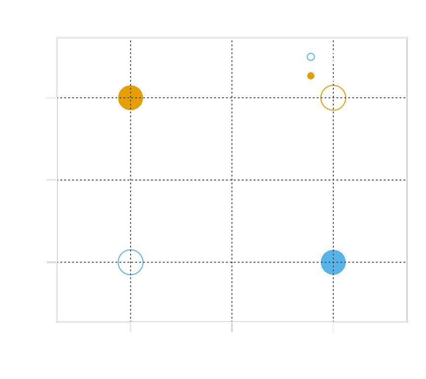
Artificial intelligence
PS3192: Data science for psychology
Matteo Lisi
Outline for today
- A brief history of artificial intelligence
- Large language models & data-science applications
A history of AI
Modern AI is built on neural networks — inspired by the brain, but increasingly diverging from it.
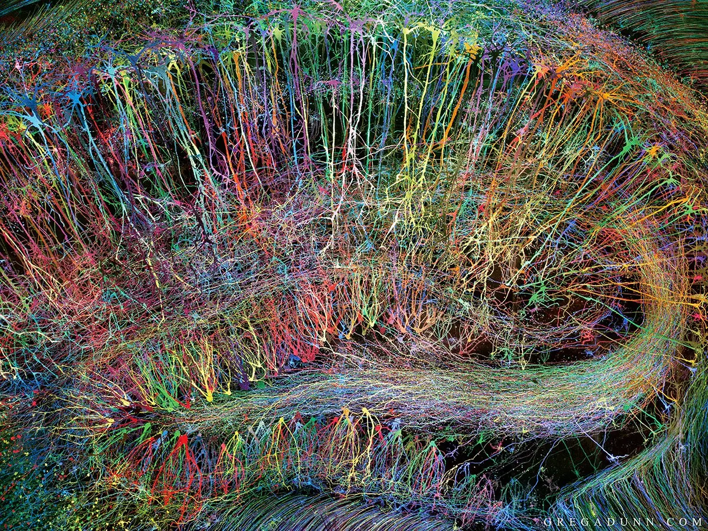
Biological neurons
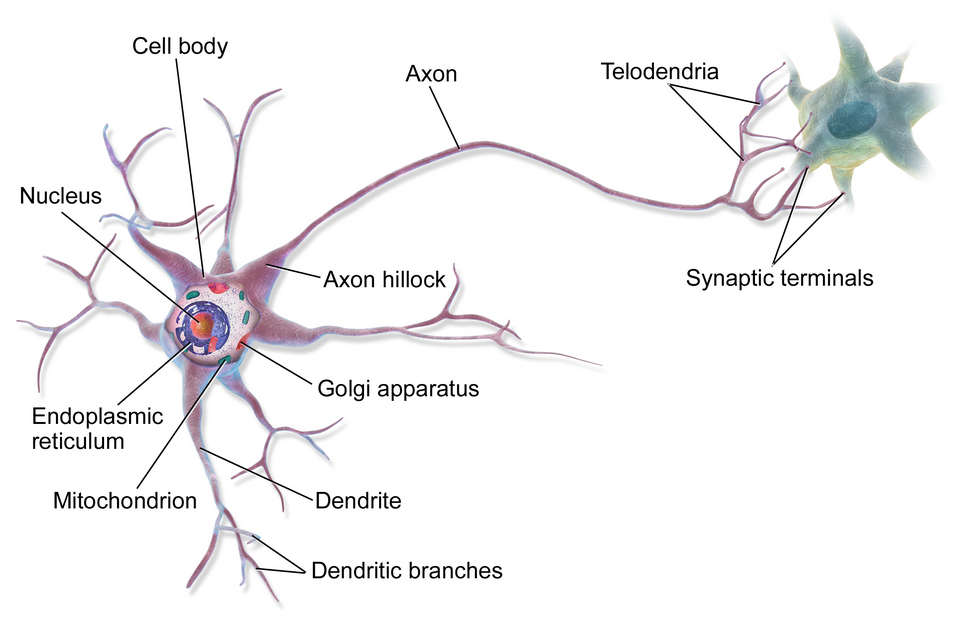
Artificial neurons
McCulloch & Pitts (1943) proposed the first artificial neuron model
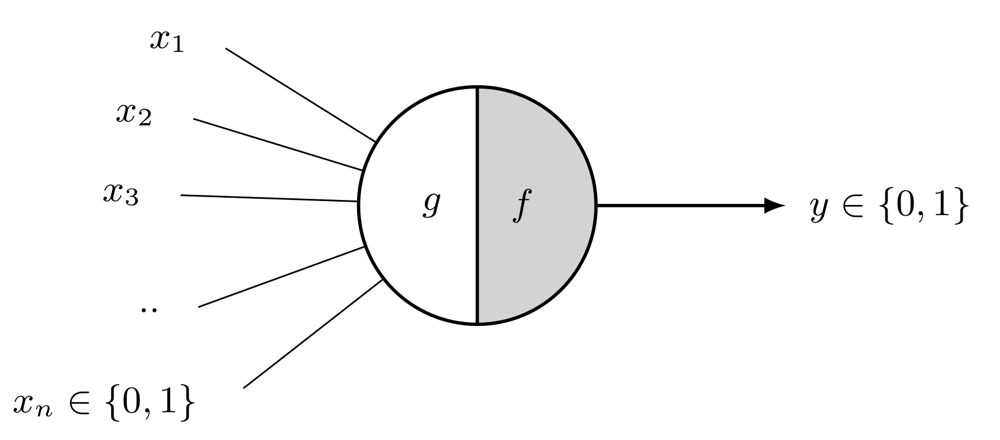
- A simple unit of computation inspired by the biological neuron
- Takes binary inputs, computes a weighted sum, fires if it exceeds a threshold
- Can be combined to implement any Boolean logic
- But: weights are fixed — it cannot learn
Artificial neurons
Artificial neurons in modern network uses also continuous inputs and more sophisticated activation functions
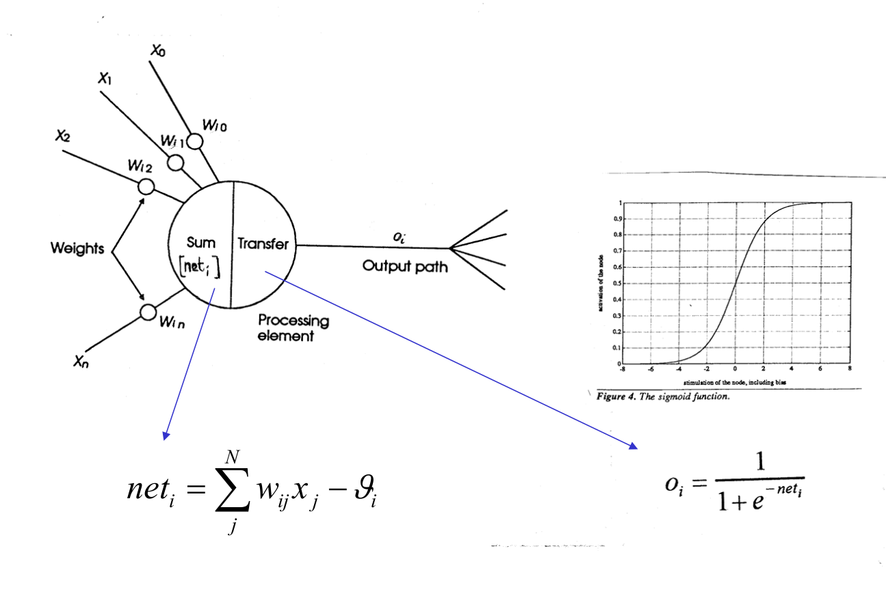
Learning
- Donald Hebb (1949) “Neurons that fire together, wire together”
- Frank Rosenblatt (1962) build the Perceptron: a single layer network that can learn weights from data
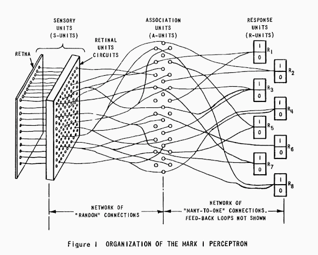
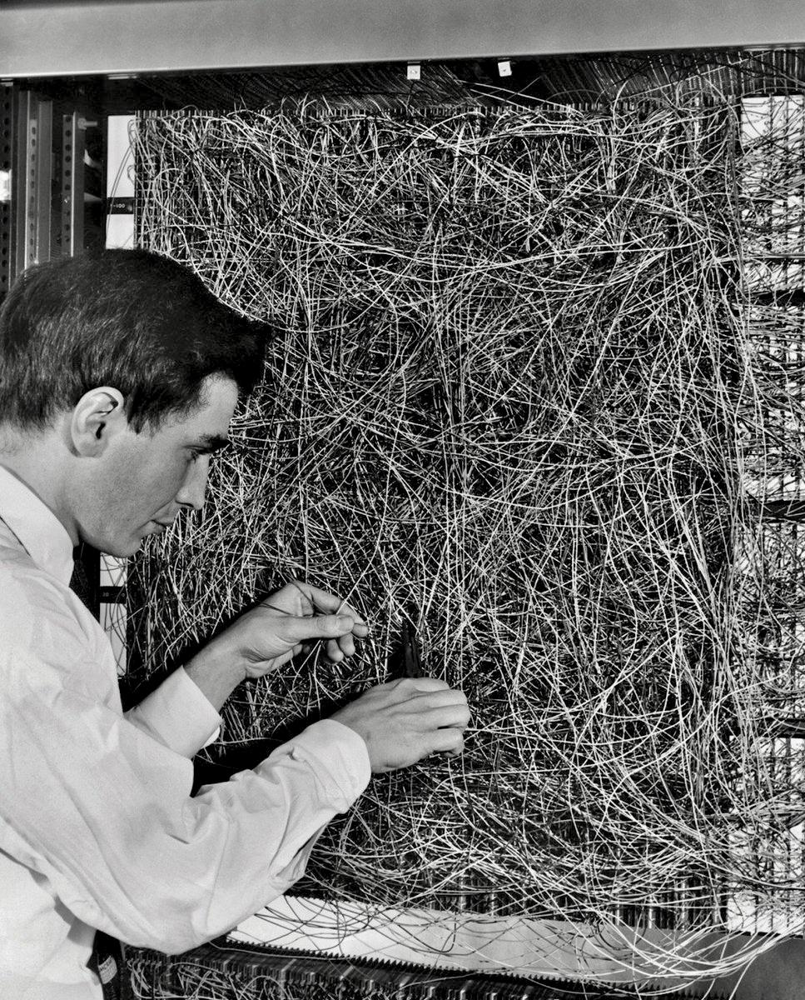
Limitations
Perceptron Convergence Theorem — if a linear solution exists, the perceptron is guaranteed to find it.
The bad news: many real problems are not linearly separable — the classic case is XOR:
| x₁ | x₂ | XOR |
|---|---|---|
| 0 | 0 | 0 |
| 0 | 1 | 1 |
| 1 | 0 | 1 |
| 1 | 1 | 0 |
No single straight line can separate the 1s from the 0s.
Minsky & Papert (1969) formalised these limitations — setting off the first AI Winter.
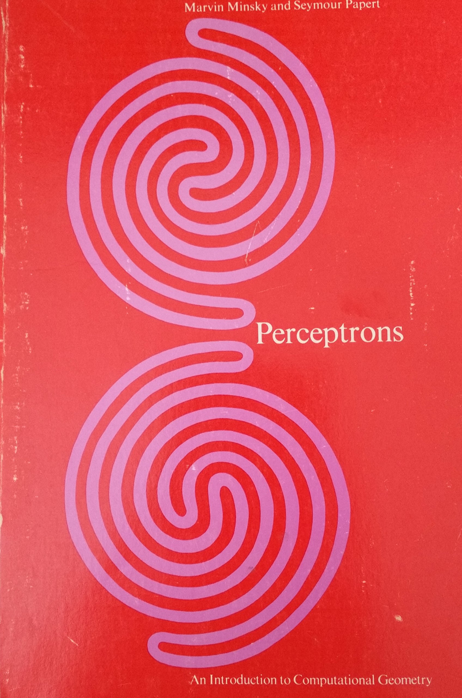
Single and multi-layer perceptrons
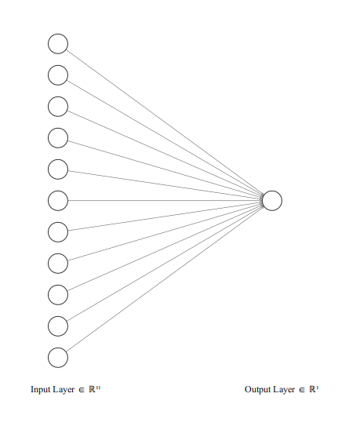
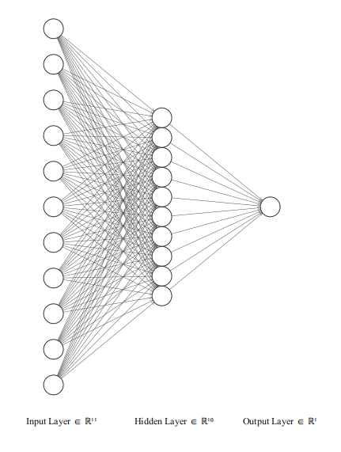
The first “AI winter” (1970-1980)
- Period of severely reduced funding and interest in neural network research, due to unmet expectations.
- Funding and energy moved toward symbolic AI, focused on using high-level representations and logic to model human intelligence.
- Minsky and Papert, among others, were proponents of symbolic AI approaches and argued that neural networks would fail to scale up beyond toy problems.
A second AI winter in the late 80s, when it became clear that many buyers and investors expected far more adaptability and robustness than what symbolic AI systems could provide.
Typical AI winter pattern: not “no progress”, but expectations rising much faster than capabilities.
Key milestones in neural network AI
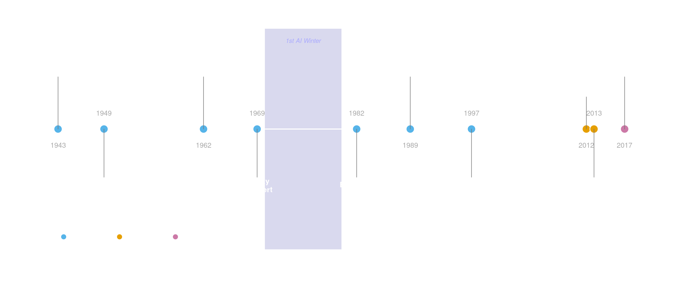
1982: Backpropagation algorithm: scalable training of multilayer perceptrons revives interest in neural networks
1989 Convolutional neural network (CNN): spatial convolutions inspired by the hierarchical organisation of the visual system
1997 Long short-term memory (LSTM): recurrent network that can learn long-range dependencies in sequences, inspired by recurrence in brain circuits
2012 Deep learning: AlexNet wins the ImageNet competition by a large margin, sparking major industry interest
2013 word2vec dense distributed word embeddings learned from huge text corpora, allowing to represent semantics with list of numbers (not unlike the brain)
2017 “Attention is all you need” paper introduces the transformer architecture, which underlies modern large language models (GPT, Claude, Gemini, etc.)
AlexNet & the ImageNet competition
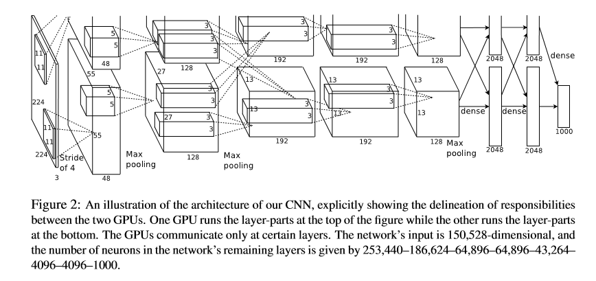
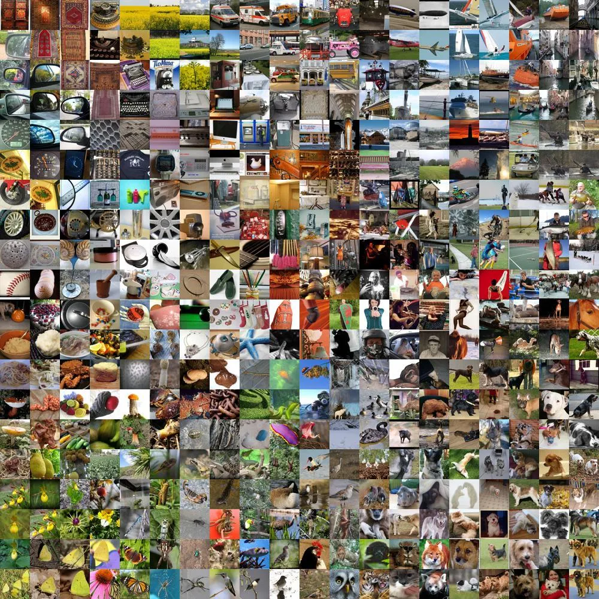
The success of AlexNet was due also to recent developments in availability of large scale labelled datasets and general purpose GPU computing.
How brain-like are neural networks?
Many influential ideas in neural networks were borrowed from biology:
The artificial neuron as a basic computational unit in a network
Early learning algorithms (e.g. the perceptron) were inspired by the strengthening of connections between co-active neurons (Hebb rule)
Information is stored in the strength of synaptic connections, a central idea in neuroscience
Convolutional networks were heavily inspired by biological vision (local receptive fields, hierarchical feature detectors)
Early approaches to language and sequence learning relied on recurrence, echoing recurrent connectivity in the brain
Semantic concepts can be represented in a distributed way: both artificial and biological networks encode information as patterns of activity across many units
Over time, neural networks increasingly diverged from biology, replacing biological realism with engineering abstractions.
A first example is backpropagation: it uses the chain rule to propagate errors backward and update connection weights during learning. By contrast, biological neurons are thought to learn mainly from locally available signals, and no clear biological equivalent of backpropagation is known.
The clearest example is the transformer architecture: achieved a big boost in performance obtained precisely by abandoning some of the most brain-inspired ideas (recurrence and convolution).
Transformer architecture
From a neuroscience perspective, several aspects are strikingly un-brain-like, and hard to justify except by their empirical success:
- Parallel processing of all tokens (\(\approx\) words) in a single feedforward pass, rather than sequentially
- Global pairwise token interactions: every token can interact directly with every other token
- Multi-head attention: multiple parallel attention mechanisms operate at once
- Positional encoding: sequence order must be added explicitly because the architecture has no built-in notion of order

Positional encoding in transformers
Tokens are first represented using a one-hot code.
They are then mapped onto lower-dimensional dense embeddings, vectors1 of numbers that capture aspects of word meaning, so that related words lie close together in the embedding space.
Because transformers process all tokens simultaneously, they have no built-in sense of sequence. To encode word order, a position vector is added to each embedding.
This is a strikingly un-brain-like solution: rather than sequence emerging from dynamics or recurrence, order is imposed by adding an explicit numerical code for position.
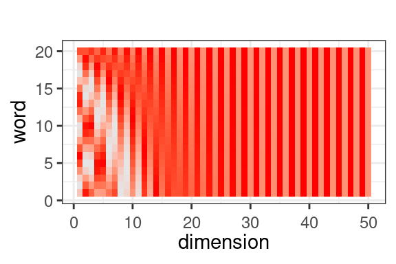
Visual explainer: https://poloclub.github.io/transformer-explainer/
How do transformers learn?
Like earlier neural networks, transformers learn by adjusting millions or billions of parameters through backpropagation.
- During training, the model is shown huge amounts of text and asked to predict the next token
- When its prediction is wrong, the error is computed and propagated backward through the network
- This gradually adjusts the weights so that future predictions improve
Although first developed for sequence-to-sequence tasks such as translation, this training objective turned out to support other abilities too.
After 2017
- Transformers rapidly scaled up: more data, more compute, and many more parameters
- Multimodal models extended the same general approach beyond text, combining language with images, audio, and other inputs
- ChatGPT made this technology widely visible when it was released to the public in November 2022
Limits of large language models
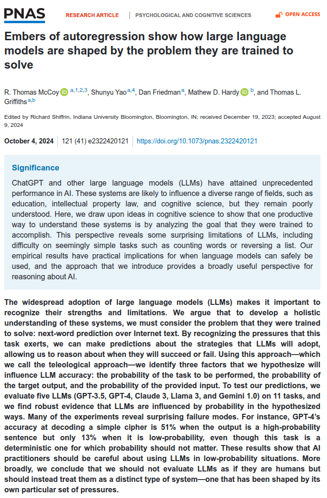
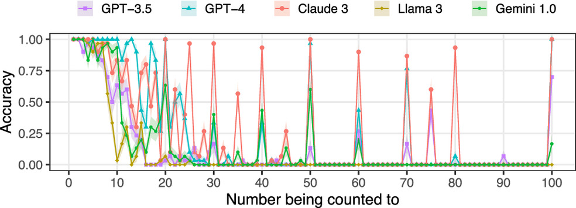
Ethics of AI
Critical AI literacy resources by Olivia Guest: https://olivia.science/ai/
Practical session: calling language models from R
Today we will use the ellmer package in R to call large language models from code.
ellmerprovides a simple interface to a wide range of model providers- It lets us send prompts, receive model outputs and process them directly in R
Steps to create a Gemini API key and adding it to R environment
Click GET API KEY in the top bar.
Sign in with a Google account, or create one if needed.
After logging in, you should be taken to: https://aistudio.google.com/api-keys
Click Create API key. After entering a name, a new API key will appear in the list on that page. Click the ‘copy’ key icon, then return to RStudio.
In RStudio, run the following command in the console:
usethis::edit_r_environ()This will open your .Renviron file in the editor. Add a line that starts like this:GEMINI_API_KEY=<paste API key here>making sure to paste the API key you created above after the equal sign. Then save and close the file.Restart R (you can do this by pressing Ctrl + Shift + F10, or by clicking Session > Restart R).
Testing that it works After completing these steps, you can test whether everything is working by running:
library(ellmer)
# chat <- chat_google_gemini("You are a terse assistant.")
chat <- chat_openai("You are a terse assistant.")
chat$chat("What is the capital of Italy?")Rome is the capital of Italy.# the client is stateful, so this continues the conversation
chat$chat("What is its most famous landmark?")The Colosseum is Rome's most famous landmark.
<Chat OpenAI/gpt-4.1 turns=5 tokens=70/18 $0.00>
── system [0] ──────────────────────────────────────────────────────────────────
You are a terse assistant.
── user [24] ───────────────────────────────────────────────────────────────────
What is the capital of Italy?
── assistant [7] ───────────────────────────────────────────────────────────────
Rome is the capital of Italy.
── user [15] ───────────────────────────────────────────────────────────────────
What is its most famous landmark?
── assistant [11] ──────────────────────────────────────────────────────────────
The Colosseum is Rome's most famous landmark.Anatomy of a conversation
Each interaction is a pair of user and assistant turns, corresponding to a HTTP request and response.
Messages are in JSON (JavaScript Object Notation) format
The API server is stateless (does not store anything about the conversation), even though conversation are statefull.
We can see what is going on under the hood using options(httr2_verbosity = 2)
User request
{
"contents": [
{
"role": "user",
"parts": [
{
"text": "What is the capital of Italy?"
}
]
}
],
"systemInstruction": {
"parts": {
"text": "You are a terse assistant."
}
}
}API server response
type: message
data: {
"candidates": [
{
"content": {
"parts": [
{
"text": "Rome"
}
],
"role": "model"
},
"finishReason": "STOP",
"index": 0
}
],
"usageMetadata": {
"promptTokenCount": 14,
"candidatesTokenCount": 1,
"totalTokenCount": 35,
"promptTokensDetails": [
{
"modality": "TEXT",
"tokenCount": 14
}
],
"thoughtsTokenCount": 20
},
"modelVersion": "gemini-2.5-flash",
"responseId": "X0rEaeDNCpCuxN8P0YmZiAE"
}Working with ‘unstructured’ data
recipe <- "
In a large bowl, cream together 1 cup of softened unsalted butter and ½ cup
of white sugar until smooth. Beat in 1 egg and 1 teaspoon of vanilla extract.
Gradually stir in 2 cups of all-purpose flour until the dough forms. Finally,
fold in 1 cup of semisweet chocolate chips. Drop spoonfuls of dough onto an
ungreased baking sheet and bake at 350°F (175°C) for 10-12 minutes, or until
the edges are lightly browned. Let the cookies cool on the baking sheet for
a few minutes before transferring to a wire rack to cool completely. Enjoy!
"
chat <- chat_openai("
The user input contains a recipe. Extract a list of ingredients and
return it in table format."
)
chat$chat(recipe)| Ingredient | Amount |
|----------------------------------|---------------|
| Unsalted butter (softened) | 1 cup |
| White sugar | ½ cup |
| Egg | 1 |
| Vanilla extract | 1 teaspoon |
| All-purpose flour | 2 cups |
| Semisweet chocolate chips | 1 cup |Another example of unstructured data
# A tibble: 40 × 2
message_id message
<chr> <chr>
1 msg_001 Hey everyone — I'm Nina, and I turned 24 this spring.
2 msg_002 Most folks online know me as Mateo. I'm 31 years old.
3 msg_003 Hi all! Priya here, 22 and excited to join this server.
4 msg_004 The username's Omar, but you can just call me Omar — I'm 46.
5 msg_005 Hello from Sophie. I celebrated number 29 a couple months ago.
6 msg_006 Name's Diego. Been around for 38 years now.
7 msg_007 What's up, I'm Aisha, age 26, joining from Nairobi.
8 msg_008 You can call me Benji. Just hit 33 last month.
9 msg_009 Hey group, this is Elena checking in — 41 years old today, actual…
10 msg_010 Jordan here. Nineteen and mostly here to learn.
# ℹ 30 more rowsCan you write code to extract name and age information from the introduction messages?
library(jsonlite)
chat <- chat_openai(
system_prompt = paste(
"You extract structured information from short self-introduction messages.",
"Return ONLY valid JSON with exactly these keys:",
'{"name":"...","age":0}'
)
)
results <- vector("list", nrow(intro_msgs))
for (i in 1:nrow(intro_msgs)) {
prompt <- paste(
"Extract the person's name and age from this forum introduction.",
"Return JSON only.",
"",
intro_msgs$message[i]
)
raw <- chat$chat(prompt,echo = "none")
parsed <- fromJSON(raw)
results[[i]] <- tibble(
message_id = intro_msgs$message_id[i],
message = intro_msgs$message[i],
name = parsed$name,
age = parsed$age
)
}
extracted <- bind_rows(results)
print(extracted)# A tibble: 40 × 4
message_id message name age
<chr> <chr> <chr> <int>
1 msg_001 Hey everyone — I'm Nina, and I turned 24 this spring. Nina 24
2 msg_002 Most folks online know me as Mateo. I'm 31 years old. Mateo 31
3 msg_003 Hi all! Priya here, 22 and excited to join this serve… Priya 22
4 msg_004 The username's Omar, but you can just call me Omar — … Omar 46
5 msg_005 Hello from Sophie. I celebrated number 29 a couple mo… Soph… 29
6 msg_006 Name's Diego. Been around for 38 years now. Diego 38
7 msg_007 What's up, I'm Aisha, age 26, joining from Nairobi. Aisha 26
8 msg_008 You can call me Benji. Just hit 33 last month. Benji 33
9 msg_009 Hey group, this is Elena checking in — 41 years old t… Elena 41
10 msg_010 Jordan here. Nineteen and mostly here to learn. Jord… 19
# ℹ 30 more rowsWhere to go from here
What have you learned?
- R Programming Fundamentals
Data types, data structures, control flow, and custom functions
- Data Importing & Cleaning
Usingtidyversepackages (readr,dplyr,tidyr)
- Data Visualization
Base R plotting and ggplot2 basics
- Machine Learning Foundations
Supervised (regression, classification) and unsupervised (clustering, GMMs)
- Reproducible Reporting
R Markdown for transparent, documented analysis
Where to go next?
Where to go next?
Further study:
- R for Data Science by Hadley Wickham (practical, applied DS)
- Statistical Rethinking by Richard McElreath (Bayesian/statistical modeling, great for academic paths)
- Statistics for Psychology using R: a linear models perspective
by Alasdair Clarke & myself.
- Practice, Practice, Practice
- Explore Kaggle datasets or other open data portals
- Join hackathons or coding challenges
- Explore Kaggle datasets or other open data portals
- Self-directed Projects
- Pick a dataset in your area of interest (e.g. OSF)
- Try cleaning, analyzing, and visualizing it from scratch
- Pick a dataset in your area of interest (e.g. OSF)
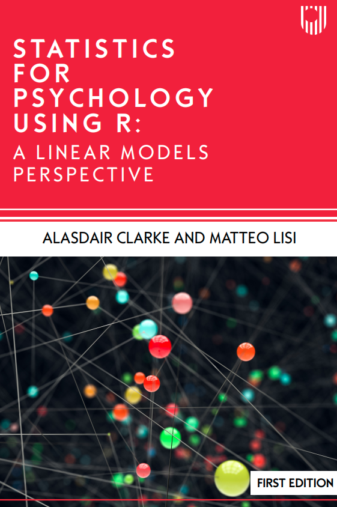
Get out there & connect!
- Data Volunteer Opportunities
- DataKind UK
- Projects supporting nonprofits, social causes
- Great place to learn while contributing
- Projects supporting nonprofits, social causes
- DataKind UK
- Networking & Communities
- R-Ladies: Inclusive community for R users
- Black in Data: UK-based collective for representation in data fields
- Women in Data: Community events, mentorship, and resources
- R-Ladies: Inclusive community for R users
PS3192 25-26